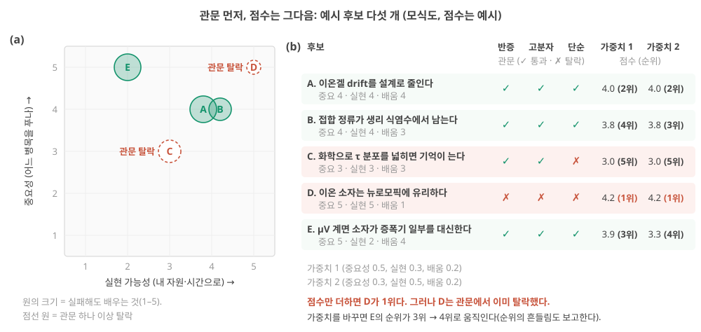
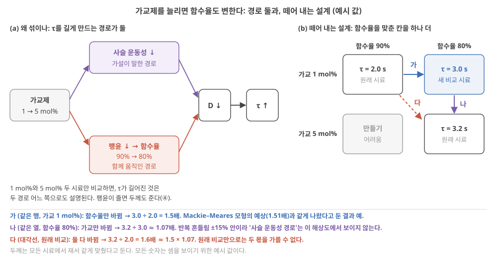
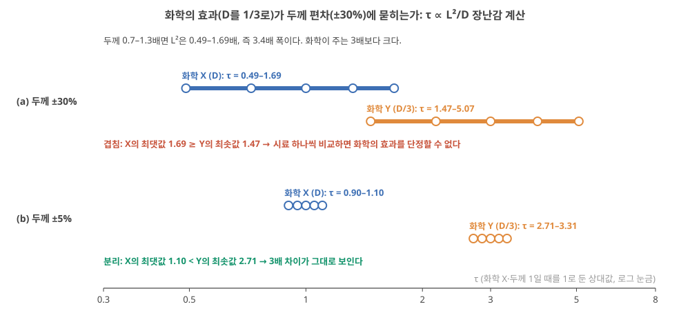
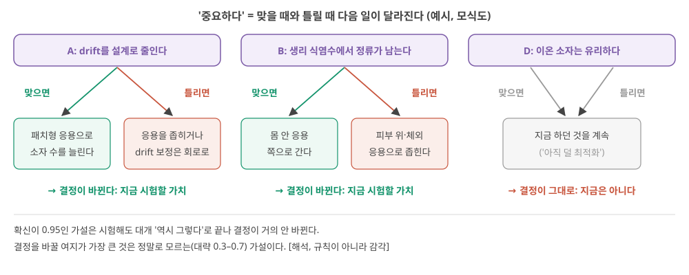

Day 54. 후보를 거르는 체와 함정: 관문·점수, 교란변수, ‘가장 중요한’ 하나
Phase 5 · 나는 무엇을 연구해야 하는가
이번 질문 — 예시 후보 몇 개를 어떤 체로 거르나? 관문과 점수를 왜 따로 보고, 함께 움직이는 변수(함수율·두께)는 어떤 비교 시료로 떼어 내며, '지금 중요한' 가설은 무엇으로 정하나?
왜 배우나 (내 소재 연구와의 연결) — 후보 가설이 여럿일 때 점수 합이 가장 높은 것을 고르면 반증할 수 없는 문장이 1위가 되기도 합니다. 오늘은 내 다음 실험을 고르는 체(관문 → 점수 → 가중치 확인)와, 가교제와 함수율·두께처럼 함께 움직이는 변수를 떼어 내는 비교 시료 설계를 익혀 결과가 원인을 가리키는 실험을 만듭니다.
오늘의 장면 (입력 → 내부 변화 → 출력) — 입력 = 예시 후보 A–E와 점수 → 하는 일 = 관문 셋으로 먼저 거르고, 통과한 것만 가중 합을 구해 가중치를 바꿔도 순위가 유지되는지 봄 → 출력 = 순위와 흔들림. 설계: 입력 = 가교제 1·5 mol% 시료 → 함수율을 맞춘 비교 시료 추가(2 × 2) → 출력 = 가교만의 몫(1.6 ≈ 1.5 × 1.07).
오늘 반드시 — 관문(반증 가능 / 고분자 설계가 손잡이 / 더 단순한 대안 점검)은 점수로 메울 수 없으므로 먼저 본다. '지금 중요한 가설'은 맞을 때와 틀릴 때 다음 결정이 달라지는 가설이다.
나중에 더 봐도 되는 것 — 여섯 함정 중 내 질문과 관계없는 것, Mackie–Meares 식의 유도(결과 1.51배만), 두께 ±30%의 L² 3.4배 계산 세부, '우연한 발견' 반론. 내 후보를 직접 거르는 일은 연구 방향이 정해진 뒤에 해도 됩니다.
다음으로 넘어가는 기준 — '오늘 반드시'를 내 말로 한두 문장 말할 수 있으면 됩니다. 나머지는 뒤의 Day에서 다시 나옵니다.
이후 쓰이는 곳 — Day 55–56 결과를 보기 전에 적는 성공·모호·기각의 세 구간과 실험 사다리, Day 57–58 '한다/좁힌다/접는다' 결정. 연구 방향이 정해지면 내 후보 2–3개를 관문 → 결정 영향 → 가장 싼 시험 → 점수 순서로 걸러 본다(선택)
지난 학습 복습
지난 학습 단위(Day 53 · 검증할 수 있는 가설의 모양: 반증 가능성, 두 사슬과 고리 믿음, 빈칸에서 후보 꺼내기)의 핵심을 다른 예로 확인합니다. 고르는 즉시 맞았는지와 이유가 보입니다. 틀려도 아래 학습자료는 그대로 열려 있고, 틀린 문제에는 다시 볼 곳이 붙습니다.
학습자료
4. 후보를 거르는 체: 관문 먼저, 점수는 그다음
이 구간을 읽고 나면 후보를 거르는 기준을 "통과해야만 하는 관문"과 "높을수록 좋은 점수"로 나누고, 점수만 더했을 때 관문에서 떨어질 후보가 1위가 되는 경우와 가중치에 따라 순위가 흔들리는 경우를 숫자로 보일 수 있다.
상황. 예시 후보 A–E 가운데 내 다음 한 달의 실험을 무엇에 쓸지 골라야 합니다. 점수 합이 가장 높은 것을 고르면 될까요? 이 구간은 그 답이 "아니요"인 이유를 숫자로 보입니다.
1–3구간에서 본 것을 먼저 짧게 되짚습니다.
- 가설은 원인 → 메커니즘 → 결과의 주장이고, "틀렸다면 무엇이 관측되나"를 숫자와 '같게 둘 것'으로 적을 수 있어야 합니다(예측 τ₅ ≈ 4.0 s, 반증 구간 1.7–2.3 s).
- 좋은 가설에는 "왜 필요한가"(응용 → 요구 → 병목 → 필요한 값)와 "왜 그렇게 되는가"(설계 손잡이 → 이온 동역학 → 소자 응답 → 계산 지표)의 두 사슬이 붙고, 고리 믿음의 곱(0.57 × 0.32 ≈ 0.18)으로 가장 약한 고리를 찾습니다.
- 후보는 앞 Day들의 빈칸에서 "빈칸 → 질문 → 가설"로 꺼냈고, 예시 후보 A–E(추천이 아닌 예시)를 만들었습니다.
이제 그 후보들을 거르는 체를 봅니다.
왜 두 종류인가. 후보를 비교할 때 흔히 표를 만들고 항목마다 1–5점을 매겨 더합니다. 이 방법에는 함정이 있습니다. 어떤 항목은 다른 항목의 높은 점수로 메울 수 없는 조건이기 때문입니다. 반증할 수 없는 가설은 중요성이 5점이어도 검증할 수 없습니다. 이런 항목은 더하지 않고 먼저 걸러야 합니다.
관문과 점수: 메울 수 없는 조건과 서로 메우는 장점
관문(gate)은 하나라도 통과하지 못하면 후보에서 빠지는(또는 고쳐서 다시 들어오는) 조건입니다. 이 Day에서 쓰는 관문은 셋입니다.
- 반증 가능한가. 틀렸다면 무엇이 관측될지 한 줄로 쓸 수 있나(1구간).
- 고분자 설계가 손잡이인가. 사슬 ②의 첫 상자가 내가 합성·조성·구조로 바꿀 수 있는 변수인가. "더 좋은 측정"만으로 답이 나오는 질문은 연구로서 의미가 있어도 "고분자 설계로 검증하는 가설"은 아니다.
- 더 단순한 대안을 점검했나. 같은 결과가 저항–커패시터 회로, 선형 회귀, 저전력 MCU, 기존 전자 소자, 또는 크기만 바꾼 소자로 나오지 않는가(Day 29 기초: 기준선). Day 29–30을 짧게 다시 말하면, 기준선은 소자에서 재료를 한 가지씩 빼 놓은 비교 대상이고 어떤 기준선을 이겼는지가 곧 주장의 범위였습니다. 대안이 같은 결과를 낸다면 가설을 "대안이 못 하는 부분"으로 좁혀 다시 들어옵니다.
점수(score)는 높을수록 좋고 서로 어느 정도 메울 수 있는 장점입니다.
- 중요성(importance): 사슬 ①의 병목을 얼마나 직접 푸나. 결과가 내 다음 결정(Day 57–58)을 바꾸나(6구간).
- 실현 가능성(feasibility): 내 소재·장비·시간으로 할 수 있나.
- 실패해도 배우는 것: 가설이 틀려도 남는 지식이 있나.
- 새로움(novelty): 이미 누가 했나(Day 47–48의 증거 표를 본다). 이미 한 것이면 "다른 조건에서도 성립하나"로 바꿀 수 있다.
가중치. 점수 여러 개를 하나로 합칠 때는 항목마다 "얼마나 중요하게 볼지"를 곱한 뒤 더합니다. 이 곱하는 숫자가 가중치이고, Day 3–4에서 입력에 곱한 뒤 더하던 숫자를 가중치라고 부른 것과 같은 뜻입니다(Day 3 기초: 가중치). 예: 가중치가 중요성 0.5, 실현 가능성 0.3, 실패해도 배우는 것 0.2이고 점수가 3, 5, 2라면 가중 합 = 0.5 × 3 + 0.3 × 5 + 0.2 × 2 = 1.5 + 1.5 + 0.4 = 3.4입니다. 가중치의 합을 1로 잡으면 가중 합도 점수와 같은 1–5 눈금 안에 머뭅니다. 가중치는 내가 정하는 값이라, 다른 가중치에서도 순위가 유지되는지를 함께 봅니다.
순서. 관문 → (통과한 후보만) 점수 → 가중치를 바꿔도 순위가 유지되는지 확인. 이것이 Day 53–54 양식의 비교표 행(반증 가능성, 통제할 수 있는 변수, 더 단순한 대안, 이미 누가 했나, 내가 가진 것)이 하는 일입니다. 양식 안내도 "더 단순한 대안 칸을 통과하지 못하면 Day 55–56로 넘어가지 않는다"고 적습니다.
한 후보를 처음부터 끝까지: A. 체가 실제로 어떻게 돌아가는지, 그림 1(Day 53)의 가설 A("비휘발 용매 + 가교로 이온겔의 drift를 줄여, 같은 readout을 1주 이상 쓰게 한다")를 관문 셋, 점수, 합, 가중치 확인까지 한 번에 따라갑니다. 가중치는 위 기초 상자의 것을 그대로 가중치 1(중요성 0.5, 실현 가능성 0.3, 실패해도 배우는 것 0.2)로 부르고, 순위의 흔들림을 보려고 실현 가능성 쪽에 무게를 더 준 가중치 2(중요성 0.3, 실현 가능성 0.5, 배움 0.2)도 함께 씁니다. 새로움은 이 예에서 숫자에 넣지 않고 "이미 누가 했나"를 따로 적는 칸으로 둡니다(어느 항목을 숫자로 더하고 어느 항목을 칸으로 둘지도 내가 정합니다). 점수는 모두 설명용 예시 값입니다[가정].
관문 ① 반증 가능한가. A를 결과가 갈리는 문장으로 씁니다. "두께·온도·습도를 같게 둔 채, 비휘발 용매 + 가교 겔에서 첫날 학습한 readout을 고정하면, 7일째 held-out 오차가 첫날의 1.2배 이내다." 틀렸다면? 7일 안에 오차가 1.2배를 넘는다. 한 줄로 쓸 수 있으므로 통과입니다(1.2배는 예시 허용치).
관문 ② 고분자 설계가 손잡이인가. 첫 상자는 비휘발 용매의 비율과 가교 밀도이고, 둘 다 조성으로 정하는 변수입니다. 측정만 더 잘한다고 답이 나오지 않고 조성을 바꿔야 답이 나옵니다. 통과.
관문 ③ 더 단순한 대안을 점검했나. 대안 둘을 봅니다. (가) 밀봉: 장치 통을 밀봉해 용매 증발을 막으면, 소재를 바꾸지 않고도 drift 가운데 증발 몫은 줄어듭니다. 그래서 A의 비교는 "같은 밀봉, 다른 조성"으로 짭니다. 그래야 밀봉으로 못 막는 drift(겔 안 이온의 재분포, 망의 느린 이완 같은 후보 가설)를 조성이 줄이는지 볼 수 있습니다. (나) 회로에서 자주 재보정: Day 33–34의 대응책이지만 정답 붙은 데이터가 있어야 해서, 사슬 ①의 요구(날마다 다시 학습할 수 없다)와 부딪칩니다 해석. 점검한 결과 A는 범위를 "밀봉 위에서 조성이 줄이는 몫"으로 좁혀 통과합니다.
점수 셋과 새로움. 중요성 4: Day 49–50에서 진짜 병목으로 본 drift를 직접 겨냥하고, 결과에 따라 패치형 응용을 계속할지가 갈립니다(6구간 표). 실현 가능성 4: 기존 겔에 조성 계열만 더 만들고, 무게·τ·held-out 오차는 갖고 있는 장비로 1주씩 잽니다. 실패해도 배우는 것 4: 틀려도 "밀봉 위에서 남는 drift는 조성과 무관하다", 곧 원인이 계면 같은 다른 곳에 있다는 것을 배웁니다. 새로움: 장기 drift를 잰 폴더 논문을 찾지 못했다는 것(Day 50 6구간)을 "이미 누가 했나" 칸에 적습니다.
가중 합과 흔들림. 가중치 1: 0.5 × 4 + 0.3 × 4 + 0.2 × 4 = 2.0 + 1.2 + 0.8 = 4.0. 가중치 2(중요성 0.3, 실현 가능성 0.5, 배움 0.2): 0.3 × 4 + 0.5 × 4 + 0.2 × 4 = 1.2 + 2.0 + 0.8 = 4.0. 세 점수가 고르게 4라서 가중치를 바꿔도 합이 그대로입니다. A는 가중치에 둔감한 후보입니다.
비교표에 한 줄로. "A | 반증 ✓(7일째 오차 1.2배 이내) | 손잡이 ✓(용매 비율·가교 밀도) | 단순 대안 ✓(같은 밀봉에서 조성 비교) | 누가 했나: 폴더에서 못 찾음 | 4.0 / 4.0 | 가장 약한 고리: 손잡이 → 용매량·\(D\) 유지(0.6)". 이 줄이 6구간의 "결정 영향"과 Day 55–56의 "가장 싼 실험"으로 이어집니다.
여기까지: 후보 하나(A)를 관문 셋 → 점수 셋 → 가중 합(4.0) → 가중치를 바꿔도 같은지 → 비교표 한 줄로 따라갈 수 있다. 다음: 다섯 후보를 점수만 더하면 무엇이 잘못되나(그림 4).
더하기만 하면 생기는 일. 이제 3구간의 예시 다섯 개 모두에 점수(1–5)를 매겨 같은 식으로 더해 봅니다(점수는 예시입니다). A는 위에서 4.0이었습니다. 그림 4가 다섯 후보를 한 장에 놓습니다. 읽는 법: (a)는 가로가 실현 가능성, 세로가 중요성(1–5점)이고 원의 크기가 '실패해도 배우는 것', 빨간 원이 관문에서 탈락한 후보입니다. (b)의 표는 관문 세 칸(✓ 통과, ✗ 탈락)과 두 가중치의 합·순위입니다. 먼저 D의 줄에서 관문 칸과 순위를 견주어 보세요. 아래 단계 보기가 그 줄을 따라갑니다.

풀이 예 — D. "이온 소자는 뉴로모픽에 유리하다"는 넓어서 중요해 보이고(5), 무엇을 해도 "보였다"고 쓸 수 있으니 실현 가능해 보입니다(5). 그러나 틀렸을 때 관측될 것이 없으니 실패에서 배울 것도 없습니다(1). 0.5 × 5 + 0.3 × 5 + 0.2 × 1 = 2.5 + 1.5 + 0.2 = 4.2. 점수만 더하면 D가 1위입니다.
관문을 먼저 보면. D는 반증 가능성(✗), 고분자 손잡이(✗), 단순 대안 점검(✗)을 모두 통과하지 못합니다. 점수를 매길 대상이 아닙니다. C는 반증 가능하고 손잡이도 있지만, "τ 분포를 넓힌다"는 일을 크기가 다른 소자 여러 개로도 할 수 있습니다(τ ∝ \(L^2\), Day 39–40). 단순 대안 관문에서 걸리므로, "크기로는 못 하는 부분"(예: 한 소자 안의 여러 τ, 크기를 바꿀 수 없는 응용)으로 좁혀 다시 들어와야 합니다.
가중치를 바꾸면. 가중치 2(중요성 0.3, 실현 가능성 0.5, 배움 0.2)로 다시 계산하면 E는 0.3 × 5 + 0.5 × 2 + 0.2 × 4 = 1.5 + 1.0 + 0.8 = 3.3으로, 순위가 (다섯 개 전체에서) 3위에서 4위로 내려갑니다. 중요하지만 어려운 후보는 가중치에 민감합니다. 순위를 적을 때 "가중치를 바꿔도 유지되는가"를 함께 적습니다.
"내가 가진 것" 칸은 어떻게 쓰나. 양식에는 "내가 가진 것(소재·장비·경험)" 칸이 있습니다. 실현 가능성의 근거로 꼭 필요하지만, 이 칸이 순위를 지배하면 이미 할 줄 아는 측정으로 답할 수 있는 질문만 남습니다. 그래서 이 칸은 점수가 아니라 "이 가설을 하려면 무엇을 새로 배워야 하나"를 적는 칸으로 쓰는 편이 정직합니다. 해석
여기까지: 점수만 더하면 관문에서 떨어질 D가 1위(4.2)가 되는 것을 그림 4로 보이고, 가중치를 바꾸면 E의 합과 순위가 움직이는 것(3.9 → 3.3)을 계산할 수 있다. 다음: 가설 후보에서 자주 보이는 함정.
- 관문(반증 가능 / 고분자 설계가 손잡이 / 더 단순한 대안 점검)은 다른 점수로 메울 수 없다. 관문을 먼저, 점수(중요성·실현 가능성·실패해도 배우는 것·새로움)는 그다음.
- 예시(점수는 설명용으로 매긴 값 [가정]): 점수만 더하면 반증할 수 없는 D가 4.2로 1위. 관문을 먼저 보면 D는 빠지고, C는 "크기로는 못 하는 부분"으로 좁혀야 한다.
- 가중치를 바꾸면 순위가 흔들린다(E: 3위 → 4위). 순위와 함께 그 흔들림을 적는다.
- 한 후보를 끝까지(A): 관문 셋 통과(단순 대안 '밀봉'은 같은 밀봉 아래 조성을 비교하도록 좁혀 통과) → 점수 4·4·4 → 가중치 1·2 모두 4.0(가중치에 둔감) → 비교표 한 줄과 가장 약한 고리.
5. 흔한 함정: 반증할 수 없는 문장, 시연, 교란변수, 크기에 묻히는 손잡이
이 구간을 읽고 나면 가설 후보에서 자주 보이는 함정 여섯 가지를 예문으로 알아보고 각각 고치는 방법을 말하며, 가교제를 늘릴 때 함께 변하는 함수율을 떼어 내는 비교 시료를 설계하고, 두께 편차가 화학의 효과를 덮는 경우를 \(\tau \sim L^2/D\)로 직접 계산할 수 있다.
4구간의 체는 후보를 문장 단계에서 거르는 순서였습니다. 그런데 관문을 통과한 후보도 문장을 고르는 습관이나 실험 설계에서 무너질 수 있습니다. 이 구간의 함정은 앞 Day에서 본 것들이 가설 단계에서 다시 나타난 모습입니다. 하나씩 봅니다.
① 반증할 수 없는 문장. "~에 유리하다", "~의 가능성을 보인다", "~에 기여할 수 있다". 고치는 법: 숫자와 조건을 붙인다. "어떤 응용에서, 어떤 기준선보다, 어떤 지표가, 얼마나". 4구간의 D가 이 함정의 예입니다.
② 시연을 가설로 착각. "하이드로겔 소자로 MNIST 95%를 달성한다"는 목표입니다. 달성해도 정확도의 얼마가 소자에서 왔는지 모르면(Day 47–48의 원시 입력 기준선: 소자를 빼고 원래 입력을 같은 readout에 넣은 비교, Day 47 1구간) 아무 메커니즘도 검증되지 않습니다. 고치는 법: 시연이 어떤 주장을 시험하는지 묻는다. "소자 상태가 원시 입력보다 시험 오차를 20% 이상 줄인다"처럼 기준선과의 차이를 가설로 삼는다. Day 47–48에서 폴더 논문 13편 중 원시 입력 기준선이 있는 것은 1편이었습니다(Day 48 5구간).
③ 교란변수. Day 41–42에서 처음 본 개념을 짧게 다시 말하면, 교란변수는 결과에 영향을 주면서 내가 바꾸려던 변수와 함께 움직이는 다른 변수입니다(Day 42 4구간). 이온액체의 음이온을 바꾼 연구에서 양이온도 함께 바뀌었던 것이 예였습니다(BMIM-BF₄, EMIM-FSI, DEME-TFSI) Lee 2024 (AFM), p.10. 이온액체가 다르면 점도 같은 성질도 함께 달라질 수 있습니다. 해석 고치는 법: 하나만 바꾼 계열 + 여러 수준 + 대조군(control). Day 41–42에서 원인을 가장 깨끗하게 떼어 낸 설계로 본, 같은 사슬에 짝이온만 이온교환한 계열과 이온 없는 대조군이 모범입니다 Zheng 2025, p.2, 4.
실험실 예: 가교제를 늘렸더니 함수율도 줄었다. 1구간의 가설을 다시 봅니다. "가교제를 늘리면 사슬 운동성이 줄어 \(D\)가 줄고, 그래서 τ가 길어진다." 하이드로겔에서 가교제를 늘리면 망이 촘촘해져 평형에서 물을 덜 머금습니다. 팽윤(swelling, 물을 빨아들여 부푸는 것)이 줄어 함수율(겔 무게 가운데 물의 비율)이 낮아집니다 [해석: 고분자 겔의 일반적 경향, 폴더 원문과 대조하지 않음]. 그러면 τ를 길게 만드는 경로가 둘이 됩니다(그림 5(a)). 하나는 가설이 말한 경로(가교 → 사슬 운동성 ↓ → \(D\) ↓)이고, 다른 하나는 함께 움직인 경로(가교 → 함수율 ↓ → 이온이 지나갈 물이 줄고 돌아가야 할 고분자 사슬이 늘어 \(D\) ↓)입니다. 1 mol%와 5 mol% 두 시료만 비교하면 "가교제를 늘리면 τ가 는다"는 맞을 수 있지만, 1 mol%와 5 mol% 두 시료만 비교해서는 "사슬 운동성 때문"이라는 메커니즘이 시험되지 않습니다. 이 비교에서 함수율이 교란변수입니다. 두 몫을 가르려면 그림 5(b)처럼 두 변수를 따로따로 바꾼 칸을 채우는 격자, 곧 요인 설계(factorial design)를 씁니다.

숫자로 따라가기. 모든 값은 예시[가정]이고, 두께는 모든 시료에서 재서 같게 맞췄다고 둡니다(두께 문제는 ④에서).
단계 1 — 관측. 가교제 1 mol% 겔은 함수율 90%, τ = 2.0 s. 5 mol% 겔은 함수율 80%, τ = 3.2 s. τ가 1.6배가 됐습니다.
단계 2 — 함수율 경로만으로 얼마나 설명되나. (식이 낯설면 결과 1.51배만 기억해도 됩니다.) 고분자 사슬을 이온이 돌아가야 하는 장애물로 보는 단순 모형(Mackie–Meares 식)으로 어림합니다. \(D/D_0 = \left(\frac{1-\phi}{1+\phi}\right)^2\). 여기서 \(D_0\)는 물속 확산계수, \(D\)는 겔 속 확산계수, φ(파이)는 겔 부피 가운데 고분자가 차지하는 비율(고분자 부피 분율)이고 단위는 없습니다. 이 식에는 사슬이 움직이는지가 들어 있지 않습니다. 고분자가 길을 막는 양만 셉니다. 그래서 "함수율만의 몫"을 어림하는 데 쓸 수 있습니다. 함수율 90%를 φ ≈ 0.1, 80%를 φ ≈ 0.2로 단순화하면(무게 비율과 부피 비율을 같게 봄), φ = 0.1에서 (0.9/1.1)² ≈ 0.669, φ = 0.2에서 (0.8/1.2)² ≈ 0.444, 비는 0.669 ÷ 0.444 ≈ 1.51입니다. 두께가 같으면 τ ∝ 1/\(D\)이므로 함수율 경로만으로 τ가 약 1.5배가 될 수 있습니다. 관측된 1.6배의 대부분입니다. 다만 모형은 "그럴 수 있다"는 어림이고, 판정은 다음 단계의 측정이 합니다.
단계 3 — 떼어 내는 설계: 함수율을 맞춘 칸을 하나 더. 1 mol% 겔을 밀폐 용기에서 천천히 말려 함수율 80%로 맞춘 시료를 하나 더 만듭니다(무게로 함수율을 확인하고, 줄어든 두께는 다시 재서 τ를 \(L^2\)로 나눠 비교합니다). 그러면 그림 5(b) 격자의 세 칸이 채워집니다. 같은 행(가교 1 mol%, 함수율 90 → 80%)은 함수율만의 몫, 같은 열(함수율 80%, 가교 1 → 5 mol%)은 가교만의 몫, 원래 비교인 대각선은 둘이 섞인 몫입니다. 5 mol% 겔을 90%까지 부풀리는 칸은 만들기 어려워 비워 두지만, 한 열만 있어도 가를 수 있습니다. 이것이 앞에서 말한 요인 설계입니다.
단계 4 — 결과를 미리 읽어 둔다. 새 시료의 τ가 3.0 s로 나오면(모형의 어림과 같음) 가교만의 몫은 3.2 ÷ 3.0 ≈ 1.07배로 반복 흔들림 ±15% 안입니다. τ 변화는 거의 함수율 경로였고, "사슬 운동성 때문"이라는 메커니즘은 이 해상도에서 보이지 않습니다. 가설의 메커니즘 부분은 기각 쪽입니다. 반대로 2.1 s로 나오면 함수율만의 몫은 1.05배, 가교만의 몫은 3.2 ÷ 2.1 ≈ 1.5배라 사슬 쪽 경로가 살아남습니다(이때는 모형의 어림이 이 겔에 맞지 않았다는 것도 배웁니다). 어느 쪽이든 배웁니다. 말린 겔은 평형 상태가 아니므로 측정 전후 무게가 변하지 않았는지도 확인합니다 해석.
교란변수를 떼어 내는 세 가지 방법. ① 같게 맞춘다(두께·함수율을 고정). ② 따로 바꾼다(격자, 요인 설계). ③ 재서 보정하거나 같은 값끼리 비교한다(\(\tau/L^2\), 같은 함수율끼리). 여기에 그 성분이 없는 대조군을 더합니다. 아래 ④의 두께도 같은 방법으로 다룹니다.
여기까지: 가교제와 함께 움직인 함수율을, 함수율만 맞춘 비교 시료 하나(그림 5의 2 × 2 격자 한 열)로 떼어 내고, 새 시료가 3.0 s일 때와 2.1 s일 때 각각 무엇을 배우는지 말할 수 있다. 다음: 두께가 화학의 효과를 덮는 경우(아래 영상은 선택).
④ 손잡이가 크기에 묻힌다. 이온 소자에서 가장 흔한 교란변수는 두께(크기)일 수 있습니다. τ는 크기의 제곱으로 변하므로, 시료마다 두께가 조금씩 달라도 화학의 효과보다 큰 차이가 생길 수 있습니다. 숫자로 봅니다. 그림 6을 먼저 보세요. 가로축은 τ이고 로그 눈금(같은 간격이 같은 배수: 1에서 2까지와 2에서 4까지가 같은 길이)입니다. (a) 줄은 시료 두께가 ±30% 흔들릴 때, (b) 줄은 ±5%로 맞췄을 때 두 화학(X, Y)의 τ 범위입니다. 두 범위가 겹치는지 보세요.

단계 1 — 화학의 효과. 화학 Y가 화학 X보다 확산계수를 1/3로 줄인다고 합시다. 두께가 같다면 τ는 3배가 됩니다(\(\tau \propto 1/D\)).
단계 2 — 두께 편차의 효과. 손으로 부은 겔의 두께가 ±30% 흔들린다면, 두께 0.70배인 시료와 1.30배인 시료의 \(L^2\)은 0.49배와 1.69배입니다. 1.69 ÷ 0.49 ≈ 3.4배. 두께 편차만으로 화학이 주는 3배보다 큰 폭이 생깁니다.
단계 3 — 겹침. 그래서 화학 X의 가장 두꺼운 시료(τ = 1.69, 상대값)가 화학 Y의 가장 얇은 시료(τ = 0.49 × 3 = 1.47)보다 τ가 깁니다. 시료를 하나씩 골라 비교하면 "화학 Y가 τ를 늘린다"는 결론이 나올 수도, 반대 결론이 나올 수도 있습니다(그림 6(a)).
단계 4 — 고치는 법. 두께를 ±5% 안으로 맞추면 \(L^2\)의 폭은 0.90–1.10배로 줄고, 두 화학의 τ 범위(0.90–1.10 vs 2.71–3.31)가 완전히 갈립니다(그림 6(b)). 또는 두께를 재서 τ를 \(L^2\)로 나눈 값(\(\tau/L^2 \propto 1/D\))으로 비교합니다. 어느 쪽이든 "두께를 같게 두고"를 예측에 적어 두는 것이 출발입니다.
⑤ 이미 아는 물리를 새 발견으로. "이온 접합이 정류한다", "겔의 전류가 시간상수 τ로 지수적으로 감쇠한다"는 다이오드와 저항–커패시터 회로가 이미 하는 일입니다(Day 29–30, Day 46 기초: 계산 primitive). Day 45–46를 짧게 다시 말하면, 계산 primitive는 큰 계산을 이루는 작은 기능 부품(곱·합, 비선형, 누설 적분, 곱셈적 상호작용, 다중 시간척도)이고, 이온 물리가 그 역할을 "할 수 있다"는 것은 "성능을 높인다"는 증명이 아니었습니다. 고치는 법: 가설을 회로로 하면 비싼 부분(감지 자리에서, 화학 입력으로, 한 소자 안의 여러 시간상수)으로 좁힌다.
⑥ 애착과 확증 편향(confirmation bias). 내가 오래 만진 소재일수록 그 소재가 이기는 실험을 고르게 됩니다. 결과를 본 뒤 "이 지표로 보면 좋다"를 찾는 것도 같은 함정입니다. 고치는 법: 결과를 보기 전에 기각 조건을 숫자로 적는다(Day 55–56). 그리고 비교표에 일부러 내 소재와 무관한 후보를 하나 넣어, 내 후보가 그것보다 나은 이유를 적어 본다.
"좋은 소재가 있으면 가설은 나중에 붙이면 된다" — 소재가 먼저 있는 연구는 흔하고 정당합니다. 그러나 가설을 나중에 붙이면 함정 ②와 ⑥에 빠지기 쉽습니다. 어떤 결과가 나와도 그 결과에 맞는 이야기를 붙일 수 있기 때문입니다. Day 41–42에서 본 대로, 계산의 경향과 실험의 최적이 어긋날 때 사후 설명이 붙는 일이 실제로 있었습니다. 소재 탐색과 가설 검증을 나누고, 탐색에도 기간을 정해 두는 것이 6구간의 반론에 대한 한 가지 응답입니다.
여기까지: 두께 편차가 만드는 τ의 폭(\(L^2\) 0.49–1.69배)을 화학의 효과(3배)와 견주고, 두께를 맞추거나 \(\tau/L^2\)로 비교하는 고침을 말하며, 여섯 함정을 예문에서 알아볼 수 있다. 다음: 후보 가운데 '가장 중요한' 하나를 고르는 법.
- 여섯 함정: 반증할 수 없는 문장 / 시연을 가설로 착각 / 교란변수 / 크기에 묻히는 손잡이 / 이미 아는 물리 / 애착과 확증 편향.
- 가교제를 늘리면 함수율도 준다: τ를 늘리는 경로가 둘(사슬 운동성 / 함수율)이다. 함수율을 맞춘 비교 시료 하나(2 × 2 격자의 한 열)로 "가교만의 몫"을 가른다(예: 1.6배 ≈ 함수율 1.5 × 가교 1.07). 떼어 내는 법은 같게 맞추기 / 따로 바꾸기(요인 설계) / 재서 보정하기.
- 두께 ±30%면 \(L^2\)은 0.49–1.69배(3.4배 폭)로, 확산계수 1/3이 주는 3배보다 크다. 두께를 ±5%로 맞추거나 \(\tau/L^2\)로 비교한다.
- 고치는 법의 공통점: 숫자·조건·기준선을 붙이고, 하나만 바꾼 계열과 대조군을 두고, 기각 조건을 결과보다 먼저 적는다.
6. "가장 중요한" 하나를 고르는 법, 그리고 이번 반론
이 구간을 읽고 나면 "중요하다"를 "결과가 다음 결정을 바꾸는가"로 정의해 후보를 평가하고, 관문 → 결정 영향 → 가장 싼 시험 → 점수의 순서로 하나를 고르며, "가설부터 세우면 우연한 발견을 놓친다"는 반론에 내 답을 쓸 재료를 갖는다.
"중요하다"를 결정으로 정의한다. 4구간의 점수에 '중요성'이 있었지만 그 뜻은 아직 정하지 않았습니다. 중요성은 막연한 말입니다. 이 교재는 이렇게 정의합니다. 가설이 맞을 때와 틀릴 때 내가 다음에 할 일이 달라지면, 그 가설은 지금 중요하다. 두 결과가 같은 행동으로 이어진다면, 그 실험은 내 결정을 위해서는 지금 하지 않아도 됩니다. 해석 그림 7에서 '맞으면'과 '틀리면' 두 화살표가 같은 상자로 가는 후보를 찾아보세요.

그림 7을 표로 옮기면 이렇습니다.
| 예시 | 맞으면 다음 일 | 틀리면 다음 일 | 결정을 바꾸나 |
|---|---|---|---|
| A (drift 설계) | 패치형 응용으로 소자 수를 늘린다 | 응용을 수 시간짜리 실험실 시연으로 좁히거나, drift 보정을 회로 쪽에 맡긴다 | 예 |
| B (생리 식염수 정류) | 몸 안 응용 쪽으로 간다 | 몸 안 응용을 접고 피부 위·체외 응용으로 좁힌다 | 예 |
| D (이온이 유리하다) | 지금 하던 것을 계속한다 | 지금 하던 것을 계속한다("아직 덜 최적화") | 아니요 |
확신이 너무 높거나 낮은 가설. 내가 이미 0.95만큼 믿는 가설은 시험해도 95%의 경우 "역시 그렇다"로 끝나 결정이 거의 바뀌지 않습니다. 반대로 0.05만큼 믿는 가설은 시험해도 대개 "역시 아니다"로 끝나 그 가설 없이 하던 일이 그대로이므로, 시험 비용이 크면 우선순위가 낮습니다. 결정을 바꿀 여지가 가장 큰 것은 정말로 모르는(대략 0.3–0.7) 가설입니다. 이 숫자 범위는 판단의 감각을 위한 해석이며 규칙이 아닙니다.
고르는 순서.
- 관문: 반증 가능 / 고분자 설계가 손잡이 / 단순 대안 점검을 통과했나(4구간).
- 결정 영향: 맞을 때와 틀릴 때 다음 일이 다른가(위 표).
- 가장 싼 시험: 가장 약한 고리를 새 소재 없이, 몇 주 안에 시험할 수 있나(2구간, Day 55–56의 실험 사다리).
- 점수: 위를 통과한 후보끼리 중요성·실현 가능성·실패해도 배우는 것·새로움을 비교하고, 가중치를 바꿔도 순위가 유지되는지 본다.
A로 끝까지 보면. 관문 셋 통과(4구간) → 맞으면 패치형 응용으로, 틀리면 응용을 좁힘(결정이 바뀜, 위 표) → 가장 싼 시험은 새 소재 없이 기존 겔의 무게와 τ를 1주 동안 매일 재는 것(가장 약한 고리 0.6, 2구간의 표) → 점수 4.0, 가중치에 둔감. 이렇게 네 칸을 다 채운 후보끼리 비교합니다.
이 순서로 고르면 "가장 중요한 가설"은 "가장 큰 주제"가 아니라 "결정을 가장 많이 바꾸면서 가장 싸게 시험할 수 있는 가설"이 됩니다. 이 정의를 받아들일지도 내가 정합니다. 내 가설을 쓴다면(선택) 양식의 "순위와 이유" 칸에 순위뿐 아니라 내가 쓴 정의를 적습니다.
이번 반론
가장 강한 반론은 이것입니다. "재료 과학의 큰 발견은 대부분 가설 검증이 아니라 우연한 관찰에서 나왔다. 가설부터 세우고 기각 조건을 정하면, 계획에 없던 이상한 현상을 '잡음'으로 버리게 된다. 새 소재 연구는 먼저 만들어 보고 나중에 설명하는 것이 맞다."
이 반론에는 맞는 부분이 있습니다. 탐색 없이는 가설의 재료(빈칸, 이상한 현상)도 생기지 않고, 가설이 너무 일찍 굳으면 관찰의 폭이 좁아집니다. 그러나 두 가지를 구별해야 합니다. 첫째, 탐색과 검증은 다른 단계입니다. 탐색 단계에서는 이상한 현상을 기록하고, 그것이 반복되면 그때 가설로 바꿔 검증합니다. 이상한 현상을 버리는 것은 가설 때문이 아니라 기록하지 않는 습관 때문입니다. 둘째, 박사 연구의 시간은 유한합니다. 탐색에도 기간과 예산을 정해 두지 않으면, Day 57–58의 결정이 "조금 더 해 보자"로 끝납니다. 정직한 응답은 "탐색의 몫과 검증의 몫을 나누고, 각각의 기간을 적는다"일 수 있습니다. 해석 반론을 받아들여 "첫 6개월은 탐색"으로 정하는 것도 정직한 답입니다. 이 반론에 대한 내 생각은 양식의 "오늘의 반론" 칸에 적어 볼 수 있습니다(예시 후보를 두고 써도 됩니다).
(선택) 연구 방향이 정해졌다면 내 후보 2–3개를, 아직이라면 예시 A–E 가운데 둘을 위 순서로 거른다면, 관문에서 걸리는 후보가 있나요? 남은 후보마다 "맞으면 다음 일 / 틀리면 다음 일"을 한 줄씩 적어 보세요. 두 줄이 같은 후보가 있다면, 그 후보는 지금 내 결정을 위한 가설이 아닐 수 있습니다.
여기까지: 후보마다 '맞으면 다음 일 / 틀리면 다음 일'을 적어 결정 영향을 판정하고, 관문 → 결정 영향 → 가장 싼 시험 → 점수의 순서로 하나를 고르며, '가설부터 세우면 우연한 발견을 놓친다'는 반론에 탐색과 검증을 나눠 답할 수 있다. 다음: 총정리와 종합 퀴즈.
- 중요성의 정의(이 교재의 제안): 가설이 맞을 때와 틀릴 때 다음에 할 일이 다르면 지금 중요하다. 두 결과가 같은 행동이면 지금은 아니다 해석.
- 이미 0.95 믿는 가설은 시험해도 결정이 거의 안 바뀐다. 정말로 모르는 가설이 결정을 가장 많이 바꾼다 해석.
- 고르는 순서: 관문 → 결정 영향 → 가장 싼 시험 → 점수(가중치 흔들림 확인).
- 반론(우연한 발견): 탐색과 검증을 나누고 각각 기간을 정한다.
오늘의 총정리
자료를 덮고 아래 표를 먼저 머릿속으로 채운 뒤 펼쳐 보세요. 그다음 종합 퀴즈를 풉니다.
한 장 요약 펼치기
| 질문 | 한 줄 답 | 근거·조건 |
|---|---|---|
| 가설이란 | 원인 → 메커니즘 → 결과의 주장. 예측은 그것이 참이면 나올 숫자. 관찰·주제·목표와 다르다 | 사전 테스트와 '먼저 만들어 보기'에서 목표("MNIST 95%")나 주제를 가설로 썼다면 여기가 달라질 지점 |
| 반증 가능성 | 틀렸을 때 관측될 결과를 미리 말할 수 있음 | 예: \(D\)가 절반인데 τ가 ±15% 안이면 기각 |
| 두 사슬 | ① 응용 → 요구 → 병목 → 필요한 값 ② 설계 손잡이 → 이온 동역학 → 소자 응답 → 계산 지표 | 문헌의 같은 사슬 Singh 2026, p.3; "소자 응답 → 계산 지표"가 가장 빈 고리(Day 41–42) |
| 숫자 하나 | 고리 믿음의 곱: 0.9·0.9·0.7 = 0.57, 여섯 고리 전체 ≈ 0.18 | 주관적 예시 믿음 값[가정]. 곱은 고리 독립을 전제하거나, 각 \(p\)를 조건부 믿음으로 매길 때 맞다(연쇄 법칙 \(P(1\text{과 }2) = P(1) \times P(2 \mid 1)\)). 가장 약한 고리부터 시험 |
| 후보의 출처 | 빈칸 → 질문 → 가설 | 장부·교차표·증거 표(Day 37–52) |
| 체 | 관문(반증·고분자 손잡이·단순 대안) 먼저, 점수(중요성·실현·배움·새로움)는 그다음 | 점수만 더하면 반증 불가능한 D가 1위(4.2) |
| 함정 | 반증 불가 / 시연 / 교란변수 / 크기에 묻히는 손잡이 / 이미 아는 물리 / 애착 | 두께 ±30% → \(L^2\) 3.4배 폭 > 화학 3배; 가교제↑면 함수율↓도 함께 → 같은 함수율끼리 비교 |
| 가장 중요한 것 | 결과가 다음 결정을 바꾸고 가장 싸게 시험할 수 있는 가설 | 이 교재의 정의 해석. 내 정의를 양식에 적는다 |
| 반론 | 가설부터 세우면 우연한 발견을 놓친다 | 탐색과 검증을 나누고 기간을 정한다 |
| 모르는 것 하나 | 내 가설의 가장 약한 고리를 새 소재 없이 시험할 수 있는가 | Day 55–56에서 실험 사다리로 판정 |
내 답에 꼭 들어가야 할 것
내 답 양식에 자기 가설을 쓸 때 쓰는 점검표입니다. 내 가설 쓰기는 선택이며, 연구 구조·응용이 아직 정해지지 않았다면 예시 후보 하나(예: A나 B)로 아래 항목을 채워 봐도 이 Day의 목표에 도달합니다.
- 후보 2–3개가 모두 "가설"(원인 → 메커니즘 → 결과)인가? 관찰·주제·목표가 섞여 있지 않나?
- 후보마다 사슬 ①(왜 필요한가)과 사슬 ②(왜 그렇게 되는가)가 둘 다 있고, 고리마다 근거 상태(확인/해석/가설/미확인)를 적었나? 가장 약한 고리를 표시했나?
- 후보마다 "틀렸다면 무엇이 관측되는가"를 숫자와 조건(무엇을 같게 둔 채로)으로 적었나?
- 관문 세 개(반증 가능, 고분자 설계가 손잡이, 더 단순한 대안 점검)를 점수보다 먼저 적용했나? 걸린 후보는 어떻게 좁혔나?
- 교란변수(특히 두께·함수율)를 하나 이상 지목하고, 그것을 떼어 내는 설계를 한 줄 적었나?
- 순위를 매긴 기준("중요하다"의 내 정의)을 적었고, 가중치를 바꿔도 순위가 유지되는지 확인했나?
장부에 옮길 후보
- 병목 장부: 내 가설 후보마다 사슬 ①의 "필요한 값"(예: 재보정 주기 ≥ 1주, 150 mM에서 정류비 유지)과 지금 소자가 허용하는 값을 나란히 적는다. 아직 잰 적이 없으면 "모름".
- 아직 모르는 것: 내 후보의 가장 약한 고리(대개 "소자 응답 → 계산 지표")를 새 소재 없이 시험할 수 있는가. / 내 시료의 두께·함수율 편차가 화학 손잡이의 효과보다 작은가.
- 용어집: 가설, 예측, 반증 가능성, 사슬(왜 필요한가/왜 그렇게 되는가), 근거 태그(확인·해석·가설·미확인), 증거의 종류(식·직접 측정·과제 평가), 조건부 믿음, 연쇄 법칙, 가장 약한 고리, 관문, 점수, 가중치 민감도, 교란변수, 함수율, 요인 설계, 하나만 바꾼 계열, 대조군, 확증 편향, 결정 영향.
- 접는 기준 후보: "가설 후보가 모두 관문(반증 가능·고분자 손잡이·단순 대안)에서 걸리고 좁혀서도 통과시킬 수 없다면, '고분자 설계로 검증하는 가설'이라는 틀을 접고 측정 방법이나 응용 쪽으로 질문을 옮긴다."
더 읽을거리
서지와 읽음·대조 상태는 참고문헌 페이지에 있습니다. 쪽수는 인쇄 쪽수입니다. 아래는 모두 보충이며, 이 Day의 본문은 이것 없이 읽히도록 썼습니다.
내가 읽은 논문 (다시 볼 곳)
- Zheng 2025, Adv. Mater. p.2, 4(짝이온 이온교환 계열 + 이온 없는 대조군). 교란변수를 떼어 낸 설계의 예로 다시 보면 좋다.
- Zhang 2024 (ACS Nano)(기하적으로 크기를 바꾼 폴리전해질 겔 memristor, 즉 이력에 따라 저항이 바뀌는 소자). "크기 손잡이"가 τ를 얼마나 옮기는지의 예.
폴더에 있지만 아직 읽지 않은 논문 (Claude가 대조함)
- Singh 2026, Adv. Mater. e74897. p.3(Figure 2: 서술자 → 소자 특성 → RC 성질 → 지표 → 실사용 점검, 흔한 실패 여섯 가지), p.19(증거의 세 수준), p.20(Table 3 보고 체크리스트).
- Lee 2024 (AFM). p.10(Experimental Section: 음이온을 바꿀 때 양이온도 함께 바뀐 교란변수의 예, Day 41–42에서 대조).
폴더 밖 미확인
- 과학 방법론의 반증 가능성(칼 포퍼), 실험 설계의 교란변수·대조군·요인 설계, 조건부 확률의 연쇄 법칙에 관한 일반 교과서. 이 Day의 본문은 일반적인 정의만 썼고 원전을 대조하지 않았다. 포퍼의 출판 연도와 '재현되는 결과' 문장은 Wikipedia "The Logic of Scientific Discovery"로만 확인했다.
- Mackie, J. S. & Meares, P. (1955), Proc. R. Soc. Lond. A 232, 498–509(이온교환막 속 전해질 확산의 장애물 모형). 5구간의 식 \(D/D_0 = ((1-\phi)/(1+\phi))^2\)의 원전. 식의 형태는 이 논문을 인용한 2차 문헌(고분자 겔 속 확산 모형 리뷰들)으로만 확인했고 원문은 대조하지 않았다.
학습 완료
이 학습 단위를 마쳤으면 눌러 주세요. 쓰기·영상·심화·추가 연습은 필요 없고, 퀴즈 점수와도 따로 기록됩니다. '완료'는 이 단위를 끝냈다는 표시이지 모든 내용을 완벽히 익혔다는 뜻이 아닙니다.
선택 활동: 글로 정리하기
선택 활동 펼치기 · 백지 회상, 가르치듯 내 답, 사전 테스트 다시 풀기 (학습 완료와 무관)
가르치듯 내 답. 후배에게 설명한다고 생각하고 짧게(3–5문장 또는 작은 도식 하나) 답합니다.
오늘은 가설 후보를 비교하는 날입니다.
- 후보는 2–3개면 충분합니다. 각 후보에 "왜 필요한가"(병목 장부, D27)와 "왜 그렇게 되는가"(Phase 4의 이온 물리)의 사슬이 둘 다 있어야 합니다. 하나라도 빠지면 후보가 아니라 희망사항입니다.
- 반증 가능성 칸이 가장 중요합니다. 가설이 틀렸을 때 무엇이 관측될지 말할 수 없으면 그 가설은 검증할 수 없습니다.
- 더 단순한 대안 칸: RC 회로, 선형 회귀, 저전력 MCU, 기존 전자 소자로 같은 결과가 나오는지. 이 칸을 통과하지 못하면 D29로 넘어가지 않습니다.
- Phase 5 전체(D25–D30)는 공개 범위 설정(
tools/publish.json)에서 기본으로 비공개입니다.
사전 테스트 다시 풀기. 같은 문제를 이유와 함께 다시 풉니다(정답을 이미 본 문제라 이해 점검 점수로 쓰지 않습니다).